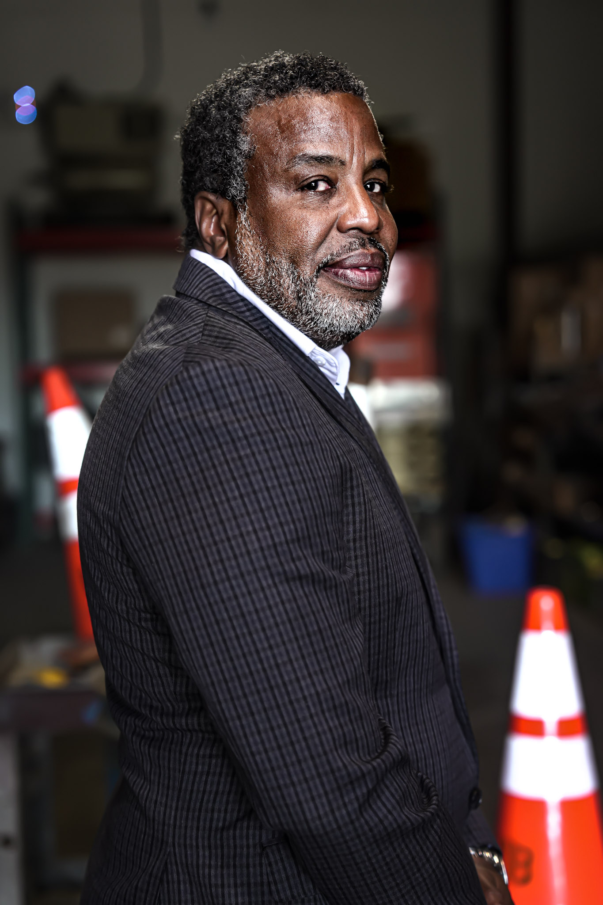

Real impact creates outcomes that benefit everyone involved.
When the organization grows, our people grow. When they grow, the community advances. That is what sustainable success looks like.
About Us
Raimore Construction is a heavy civil contractor headquartered in Portland, Oregon. Since 2000, we have delivered complex infrastructure across the Pacific Northwest, roads, bridges, utilities, earthwork, and the foundational systems that keep communities connected and economies moving.
We are recognized for technical competence, disciplined execution, and a standard of quality that holds across every project we undertake.
Our philosophy prioritizes teamwork, collaboration, and open communication throughout all phases of a project, from design through completion, ensuring delivery on schedule and within budget.
Our Founding
Jeff Moreland Sr.
Raimore was founded by Jeff Moreland Sr., whose path into heavy civil construction was shaped as much by character as by experience.
Before entering the industry, Jeff spent years in corporate leadership, entrusted with organizational management, financial strategy, and operational systems. Those years gave him tools he would put to use, but they were preparation, not purpose.
What defined him was something that predated every title and outlasted every role: a faith-driven love for people. That conviction was not incidental to his professional life. It was the foundation from which everything else grew.
"A genuine concern for those who had been overlooked, not as a social stance, but as a deep personal conviction."The founding conviction

That conviction drew him toward the margins of the construction industry, where capable, minority-owned firms were being outpaced not by a lack of skill, but by a lack of access and infrastructure. He began offering consulting services to those firms, helping them build accounting systems, strengthen governance, manage risk, and professionalize their operations.

That work grew into Now I Live Business Solutions, a firm dedicated to helping underserved contractors compete on equal footing. None of it was a calculated step toward founding his own company. Jeff was simply doing what his faith compelled him to do.

What emerged from that season was Raimore Construction, not as the product of a business plan, but as the result of consistent faithfulness to a calling. Jeff would be the first to say that the credit belongs not to him, but to Providence, and to the people who showed up and gave their best to something larger than themselves.

What We Are Building
We do more than deliver infrastructure. We strengthen families, careers, and communities. Our philosophy is simple: when people thrive, everything else follows.
The Standard We Hold
Profit is essential. No business can endure without it. But profit is not the ultimate measure of success, we measure success by impact.
When the organization grows, our people grow. When they grow, the community advances. That is what sustainable success looks like.

Many of our employees have come from backgrounds that historically faced barriers to opportunity, and we are humbled to demonstrate what becomes possible when excellence and dignity meet real opportunity.

People choose to work at Raimore to build meaningful projects, grow professionally, and be part of a culture where integrity, teamwork, and craftsmanship actually mean something.
How We Work
At Raimore, high standards and high support go together. We are intentional about the work we pursue, the partnerships we cultivate, and the environments we create. We take on complex, high-visibility projects and expect excellence across the field, the office, and the organization as a whole.
That expectation is not a burden we place on our people; it is an invitation we extend to them.
Our work can stand on its own, and our culture elevates it.
Success at Raimore is not defined by the size of a contract, but by who is lifted along the way and the legacy the work leaves behind.
Infrastructure becomes more than concrete and steel when it strengthens a region and advances the people who build it.
That is the heart of Raimore,
and we hold it with open hands.

Our Mission & Vision
Close to three decades ago, Raimore was built on a simple conviction, that doing the right thing is inevitable. Not optional, not situational, but inevitable. We deliver work that outlasts the moment it was built, partnering with those who share that standard, investing in every person who carries it out, and measuring greatness not by what we construct, but by what we leave behind in the lives, the character, and the legacy we build together.
To pour into the people whose hands move communities forward, impacting lives that matter long after the work is done, walking alongside every owner, partner, and community we serve, measuring success by the futures we build, the relationships we cultivate, and the people we become together.
Our Foundation
The principles that guide every decision, every project, and every relationship we build at Raimore.
We uphold transparency and professionalism in every decision and action.
We foster teamwork and partnership at every level of project delivery.
We champion diversity as a driving force for innovation and excellence.
We protect our people, partners and communities through rigorous safety practices.
We are committed to craftsmanship and precision in every project.
We build infrastructure that uplifts and connects the people we serve.
Work Process
 Jeff Moreland, R.O.I
Jeff Moreland, R.O.I
The Story, Continued
The convictions behind Raimore are best understood through the people they have touched. Two film projects carry that story beyond the jobsite.
Film Project
A documentary project on construction as an engine of change, following the people and communities whose lives are transformed when opportunity, living wages, and belonging become real.
Film Series
A film series exploring the guiding principles behind Raimore's work, where faith, business, and community meet, and why we measure success by the lives lifted along the way.
Produced with our community partners at Peripheral Vision PDX.
FAQ
Quick answers about our work, qualifications, and how we partner with owners, agencies, and contractors across the Pacific Northwest.
Raimore Construction specializes in heavy civil and general contracting work across the Pacific Northwest. Our typical projects include:
We work on both public and private sector projects and have delivered work for TriMet, ODOT, PBOT, Portland Parks & Recreation, Metro, and Prosper Portland.
We are headquartered in Portland, Oregon, at 2522 NE Martin Luther King Jr Blvd, and we primarily serve the Portland metro area and surrounding regions across the Pacific Northwest.
Project locations may vary depending on scope and client requirements. For the right project, we have the bonding capacity and field resources to mobilize across Oregon and southwest Washington.
Yes, public sector work is a core part of what we do. Raimore has extensive experience delivering projects for state agencies, transit authorities, municipalities, and school districts, and we are well-versed in compliance, reporting, and regulatory standards required for government and agency-led construction initiatives.
We deliver public projects under multiple delivery methods including CM/GC, design-build, hard bid, and joint venture structures.
We don't sub out the hard parts, we self-perform them. Our in-house capabilities include:
Direct ownership of the work means tighter quality control, faster response to field changes, and better accountability for owners.
Supporting emerging firms is foundational to Raimore, it's how the company itself was built. Through our program development, mentoring, and training services, we help DBE, MBE, WBE, and ESB contractors grow their capacity, professionalize their operations, and compete on equal footing.
On many of our projects, we have met or exceeded DBE participation goals, including a recent project completed with 100% MWESB participation.
Yes, it's one of our core specialties. We routinely deliver complex work around active transit, traffic, and adjacent occupied buildings with zero service disruption. Phased staging, night work, traffic control, public outreach, and stakeholder coordination are core competencies for our team.
Recent examples include the 82nd Avenue corridor projects (delivered under live PBOT traffic), Hollywood Transit Center (built around active TriMet service), and PMLR shelter installations completed entirely during night work windows.
The fastest way to start a conversation is through our contact form, tell us about your project, timeline, and scope, and our team will get back to you within one business day.
For urgent matters, you can also reach us directly at (503) 493-3533 or email info@raimore.com.